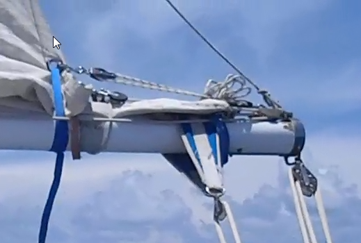

AppendicesSupplément au voyage de Don Pedro... |
Les bonnes idées qu'on a eues, les programmes qu'on a utilisés, trucs et astuces, commentaires...
Informatique |
Top |
| Navigation | OpenCPN, lit tous les formats de cartes, parfait ! |
| Marée | JTides |
| Marées dans le Monde | |
| WXTide32 | |
| Astronomie, étoiles | Stellarium, excellent, esthétique, facile à utiliser |
| Cartes du Ciel | |
| Night vision | |
| Météo, fax & GRIBs | getFax, viewFax |
| Weather Wizard (gé.nial. C'est ce que je dirais, même si c'était pas moi qui l'avais écrit) | |
| emails |
Airmail client (for SailMail).
Il faut avoir un modem connecté à la BLU. C'est aussi grâce à ce modem qu'on peut recevoir les fax. |
| Bureautique | Open Office (Texte, Feuilles de calcul, Présentations, etc) |
| Notepad++ | |
Bonnes idées |
Top |
À améliorer |
Top |
Documents |
Top |
| Exploring the Marquesas Islands, de Joe Russell. | En anglais. Très bien. Il a été publié 10 ans avant notre voyage, ce qui fait que certaines informations datent un peu. Mais toutes les informations sur les mouillages sont précises et demeurent valides. |
| Charlie's Charts of Polynesia, de Charles & Margo Wood | En anglais. Très bien aussi. |
| Guide de navigation et de tourisme de la Polynésie française | Existe en français et en anglais. Précis. Certaines informations datent. Il existe un site à jour sur les mêmes endroits (sea-seek). |
| Sea-Seek | En français et en anglais. À jour ! On en avait imprimé plusieurs pages avant de partir. |
| Landfalls of Paradise | Pour notre voyage, redondant avec les précédents, et moins précis. |
| South Pacific anchorages | Pour notre voyage, redondant avec les précédents, et moins précis. |
Commentaires |
Top |
Le truc probalement le plus important : Si on avait dû attendre d'être prêt à 100% pour partir, on serait sans doute toujours en train de préparer le bateau.
Il y a le prévu, l'imprévu, et l'imprévisible...
Le pilote automatique a fonctionné comme une horloge durant tout le voyage.
L'osmoseur (désalinisateur) également.
Ces deux-la ont été des atouts précieux.
Bravo aussi à la radio et à l'ordinateur, qui n'ont pas posé de problème.
Ce qu'on n'a pas utilisé :
La préparation du voyage
J'avais fait un programme avant de partir, la liste des endroits à voir.
Par exemple, il y avait toutes les Îles Marquises, les Gambier, les Australes...
Après les vingt-cinq jours de la première étape, Corine a décidé qu'on n'allait peut-être pas repartir tout de suite.
Et en fait, c'était une bonne idée, ca nous a permis d'avoir un meilleur contact avec l'île et ses habitants.
Les escales qu'on n'a pas faites, on les fera la prochaine fois. Elles peuvent aussi servir de plan B, et on peut aussi ajouter des escales en cours de route. C'est ce qu'on a fait à Tongareva, ça aurait été dommage de louper ça.
Pour faire court, c'est bien d'avoir un planning - ça permet entre autres d'anticiper les conditions météo en fonction de la période de l'année - mais il faut pouvoir - et savoir - y déroger.
Le pilote, en croisière.
Vaste sujet... Le nôtre a très bien fonctionné, on a tâché de le ménager. On a toujours fait en sorte que le pilote
peine le moins possible, quitte à ce que le bateau aille moins vite qu'il ne l'aurait pu.
On n'a pas un de ces pilotes qui barrent réellement le bateau et qui savent anticiper jusqu'à un certain point, ce qui
fait qu'il y a eu des fois où il a fallu barrer nous-mêmes, notamment dans de la mer.
Le problème en croisière est un peu différent de celui qui se pose en course où l'objectif est d'arriver le plus vite possible.
En croisière, on fait en sorte que l'équipage se sente le mieux possible (on peut considérer que le pilote est un membre de l'équipage...). On fait ainsi en sorte que les mouvements du bateau soient les plus doux et agréables possibles ; dans ces (bonnes) conditions, ça n'est pas un problème du tout si une étape dure un peu plus longtemps...
La houle
Ah la saloperie ! En Polynésie, on a eu de la houle. Météo-France fournit des prédictions de houle avec ses bulletins
destinés à la marine. La seule conclusion qu'on peut tirer de ces prédictions est que ça ne se passera pas comme prévu.
Quand une houle de sud est prévue, on est sûr qu'on n'aura pas de houle de sud. Il est dommage que Météo-France ne
publie pas les paramètres qui aboutissent à ces prédictions..., le problème n'est pas simple, mais le fait de ne disposer que des
conclusions a quelque chose de frustrant, en particulier lorsqu'elles s'avèrent ne pas être exactes.
Toujours est-il qu'on a eu de la houle, parfois plusieurs trains de houle superposés (jusqu'à trois). Et lorsqu'on est
au vent d'une côte avec des falaises (comme sur la côte Est de Nuku-Hiva), ça rebondit, et du coup ça fait six... Bonjour l'ambiance.
On ne sait pas d'où elle vient, elle peut se lever du jour au lendemain, et disparaitre aussi vite qu'elle est apparue.
Si quelqu'un y connait quelque chose, qu'il me contacte ! J'aimerais beaucoup en savoir davantage.
Le système de prise de ris.
Après avoir essayé plusieurs combines, on a maintenant une bosse qui passe par l'arrière de la bôme,
monte dans l'empointure dans la voile, et est amarrée sur la bôme par un nœud de lagui (les bordures sont libres). Lors d'une prise de ris,
une fois que la bosse est raidie on grée un palan à quatre brins entre l'empointure et l'arrière de la bôme, et on
passe une sangle (deux ou trois tours) par l'empointure, autour de la bôme. Le palan et la sangle ont pour but
d'éviter le raguage, et ça fonctionne, rien ne bouge, rien ne s'use de cette manière.

Le système de mouillage, avec le croc à chaîne et le textile.
Avec le davier à l'extrémité du bout-dehors, si le mouillage est agité, ça ne va pas,
ça engendre des chocs à l'extrémité du bout-dehors qui se propagent dans tout le bateau.
Ça esquinte le bateau et ça vous tape sur les nerfs.
La cadène de la sous-barbe a deux axes, l'un au dessus de l'autre. La sous-barbe utilise l'axe supérieur. L'axe inférieur est utilisé par un bout textile
de trois ou quatre mètres qui a un croc à chaîne à son autre extrémité, lequel peut être frappé sur la chaîne du mouillage.
Ainsi, la chaîne est détendue entre le davier et le croc,
et c'est alors la cadène de sous-barbe qui encaisse la force du mouillage. Le textile amortit très bien les chocs éventuels.
Si ce dispositif ne suffit pas, c'est que le mouillage n'est pas bon, comme c'était le cas à Omoka (Tongareva).
Une amélioration possible serait d'ajouter un snubber (amortisseur en caoutchouc) sur la ligne du croc...
La navigation
On a utlisé OpenCPN et des cartes électroniques, avec un GPS.
On avait à bord 4 GPS.
On avait aussi tout ce qu'il faut pour pouvoir se passer complètement d'électricité, à savoir des cartes en papier,
un loch à poisson, et des éphémérides, de façon à pouvoir prendre le relai avec la navigation astronomique. On avait même de quoi recaler
les montres par la méthode des distances lunaires (cette méthode demande beaucoup de pratique, mais ça fonctionne).
Les éphémérides avaient été publiées avant le départ, à l'aide de programmes écrits pour l'occasion.
On faisait aussi régulièrement des droites au sextant, de soleil, de lune, de planètes et d'étoiles, afin de ne pas perdre la main (c'est entièrement une histoire d'entrainement, comme le vélo)...
On a découvert à cette occasion les étoiles de l'hémisphère sud, qu'on ne connaissait pas. On avait des cartes du ciel, un star finder, et les programmes mentionnés au début du document.
On n'a pas eu besoin du sextant, ordinateur et GPS n'ont pas failli..., mais on était prêt. L'estime était tenue en permanence, une
panne électrique n'aurait pas affecté notre navigation.
La météo
Essentielle sur les longues étapes. Lorsqu'on a quitté San Francisco, la saison des cyclones n'était pas terminée (NB:
c'est les compagnies d'assurance qui déterminent la durée de la saison des cyclones... De quoi je me mêle. Est-ce que les météorologues
s'occupent des assurances ?), et on a fait attention à s'éloigner de
la côte mexicaine, où les cyclones se forment (et disparaissent) éventuellement à cette saison.
Lors de la dernière étape, on a eu à négocier des anticyclones et des dépressions.
Avec la BLU et le modem, on a été capable de recevoir fax et GRIBs. On affichait ces documents hétérogènes à l'aide d'un programme
écrit pour l'occasion, qui permet de superposer plusieurs fax sur une carte, d'y ajouter un GRIB, d'y mettre la position du bateau, etc, ça présente l'avantage énorme de
simplifier la lecture de ces documents.
Ce programme a évolué au cours du voyage, il s'est avéré un atout considérable. Il est disponible gratuitement sur
son site.
Ce programme contient des capacités de routage. Le routage peut être fort utile en croisière.
D'autant que le programme comporte cette possibilité de calculer un routage en évitant des angles de vent réel inférieurs à
une valeur donnée, et/ou une force de vent réel supérieure à une autre valeur.
L'année du voyage était une année à Niña. C'est un coup de bol, ces phenomènes ne sont - que
je sache - pas prévisibles. La Niña a fait que cette année-là, il n'y a pas eu de cyclone en Polynésie. L'année précédente, il y avait un
Niño, et le cyclone Oli a fait bien du dégat...
Grâce à la Niña, on a pu rester en Polynésie plus longtemps, et c'est tant mieux.
Le dodger
Une pièce en plus...
Je ne l'aimais guère au début, je trouvais qu'il alourdissait la silhouette du bateau ;
on l'avait affalé et ferlé. Mais il est vite revenu en place, ça fait un bon abri pendant les quarts.
Et accessoirement, on peut y entasser pas mal de bordel, on ne s'est pas gêné.
Le gaz
La cuisinière qu'on a (Force 10, deux brûleurs et un four) fonctionne au gaz, au propane (LPG: Liquid Propane Gas), c'est ce qu'on trouve aux US (parce que le reste est une arme chimique). Et bien évidemment, c'est incompatible avec le reste du monde. En Polynésie française, on trouve du butane (parce que le reste est une arme chimique).
Les injecteurs sont différents, et les pas de vis ne sont pas les mêmes, une vraie galère...
On peut avoit une série d'adapteurs pour les pas de vis, et des injecteurs pour le butane (quand ils existent...).
On a quant à nous pris l'option d'embarquer suffisamment de gaz. On avait une bouteille de 3 gallons, et trois de 5 gallons (soit 18 gallons au total). Sans se restreindre (Corine a fait du pain, des gâteaux, des conserves...), on consomme en moyenne ¾ gallon de gaz par semaine. On a tenu sans soucis de San Francisco à Hawai'i, où on a pu refaire le plein.
Il existe aussi des cuisinières à gas-oil ou à pétrole (kérosène). Elles nécessitent un préchauffage, qui les rend
moins pratiques à utiliser que les cuisinières à gaz...
Blue jobs, pink jobs...
C'est une idée - un concept - qui émane de Jim & Sue Corenman. Ça signifie en gros que chaque membre de l'équipage
a des tâches qui lui sont plus particulièrement dévolues. Quand on est deux et qu'on navigue en couple,
c'est facile d'appeler ça "blue" et "pink".
Exemples :
La cape
On a eu une fois à prendre la cape - sèche. Il y avait du vent, force 8 établi, rafales à 9. Pas une tempête, mais pas des vacances non plus. C'était sur le trajet Hawai'i - Drakes Bay, une petite dépression était dans notre sud. On l'a vue venir, on faisait du nord pour mettre autant de distance possible entre son centre et nous. On était sous trinquette seule, le vent continuait à forcir, et pour ne pas faire exploser la trinquette - toute neuve - on a entrepris de gréer la trinquette lourde, plus petite et plus costaud.
En fait, après avoir affalé la trinquette - on était alors à sec de toile - juste avant de renvoyer sa remplaçante, on a rapidement constaté que les mouvements du bateau étaient plus doux et plus reposants. Du coup, la trinquette lourde est restée dans son sac.
Barre amarrée sous le vent, on est rentrés à l'abri se faire des pancakes, on s'est reposé, c'était plutôt cool. On a remis en route environ huit heures après, le vent avait tourné comme prévu, le baro remontait, on était portant, en forme..., tout allait bien.
Moitessier fait remarquer qu'un bateau à la cape est un bateau qui dort..., c'est exactement ça.
L'enseignement qu'on en tire, c'est qu'il ne faut pas hésiter à prendre la cape - sèche ou courante - lorsque la fatigue se fait sentir. Le moral de l'équipage remonte, alors que les conditions extérieures n'y incitent pas forcément.
Durant la période qu'on a passé à la cape, le vent nous faisait reculer, il soufflait de l'est (et c'est de l'est qu'on voulait faire). Mais à 1½ nœud, c'est pas bien grave. Encore une fois, on n'est pas en course, l'objectif essentiel est le confort de l'équipage, pas le fait d'arriver avant le deuxième...
Les bruits
Connaître son bateau, c'est aussi connaître tous les bruits qu'il peut faire. Un bruit inconnu demande une attention particulière.
Les bruits sont différents à l'extérieur et à l'intérieur, savoir à quoi ils correspondent permet de mieux dormir...
Il y a aussi quelque chose dont on a hésité à se parler durant le voyage, on n'osait pas, on avait peur de passer pour un
loufoque. C'est les bruits qui font travailler l'imagination, voire l'imaginaire. On a eu plusieurs fois l'impression
d'entendre comme des conversations derrière un mur ou à travers une cloison, sans pouvoir saisir les mots, mais les intonations étaient clairement
celles d'une conversation. On n'était que deux à bord, mais on s'est plus d'une fois retenu de demander à l'autre "À qui tu parlais tout à l'heure ?"...
C'est très curieux ; ça explique au moins en partie la richesse des légendes élaborées au cours des siècles par ceux qui vont sur la mer...
Le bateau idéal
J'ai pris des tonnes de notes pendant le voyage, sur des idées pour améliorer le bateau, et la façon de le mener.
On a rencontré plusieurs autres bateaux, on a parlé de leurs avantages et de leurs inconvénients.
Multicoques, bateaux lourds, légers, des modernes, des classiques, d'autres...
Toutes ces rencontres font réfléchir à ce que pourrait être le bateau idéal.
Maintenant, je crois que je sais : le bateau idéal, c'est celui sur lequel on navigue. On le connait, on sait quoi en attendre, quelles sont ses limites,
ce qu'on peut lui demander, ce qui fonctionne, ce qui ne marche pas... Un bateau devient idéal quand l'équipage va avec, c'est ça le truc.
Apprendre
Il y a les choses qu'on sait avant de partir, et celles qu'on apprend en route.
On a beaucoup appris en route.
Lorsqu'il s'agit de détails techniques, il y a des choses à dire. Quand on rencontre en route un problème technique, la question qui se pose est de ne pas compromettre
ce qui marche pour réparer ce qui merde. Connaitre tous les aspects techniques du bateau sur lequel on navigue est un atout énorme.
Ce genre de compétences comprend le moteur, le gréément, les voiles, le gaz, l'électronique, le système électrique,
la refrigération ...et j'en passe.
Quand on sait tout ça, lorsqu'il arrive quelque chose, on sait :
Le budget
Approximativement, voilà ce qu'on a dépensé :
| Frais de mouillage Tahiti & Bora-Bora | $ 350.00 |
| Frais de mouillage Hawai'i | $ 750.00 |
| Frais administratifs (Visas, taxes, etc) | $ 500.00 |
| Location voitures | $ 1 500.00 |
| Carburants (Essence, Diesel, Gaz) | $ 500.00 |
| Matériel pour le bateau (cartes, cadènes, nouvelle trinquette, électronique, petit matériel, nouveau réservoir de fuel, etc) | $ 3 000.00 |
| Divers (nourriture, restaurants, souvenirs, locations de vélos, etc) | $ 13 400.00 |
| Total | $ 20 000.00 |
Et le reste...
- On a fait en tout 175 heures de moteur. Ce chiffre comprend les fois où le moteur était débrayé, juste pour recharger les batteries. On a consomé environ 300 litres de fuel. Pour un trajet d'environ 10.000 milles marins, ça nous fait un rendement de 1,6 litres pour 100 km... Pas mal.
- On n'a qu'exceptionnellement été surtoilé (et c'était à dessein). On a parfois été sous-toilé. Ça n'a juste aucun sens de surtoiler un bateau comme le nôtre, de toute façon, il ne va pas partir au planning...
C'est un bateau cool.
- Pour les quarts, on faisait ça "sur-demande". Celui qui était sur le pont n'allait réveiller celui
qui était de banette que lorsqu'il n'en pouvait plus, ou lorsqu'une manœuvre était nécessaire. Ça a donné lieu à des quarts qui duraient entre deux et six heures.
On dormait en mer entre quatre et six heures par vingt quatre heures. C'est pas beaucoup, mais ça l'a fait.
- On n'a jamais fermé le bateau à clé, même lorsqu'on n'était pas à bord. On n'a jamais été inquiet, on n'a pas non plus entendu parler
de qui que ce soit qui se soit fait piquer quelque chose.
Contact |
Top |
Le(s) bouquin(s) |
Top |